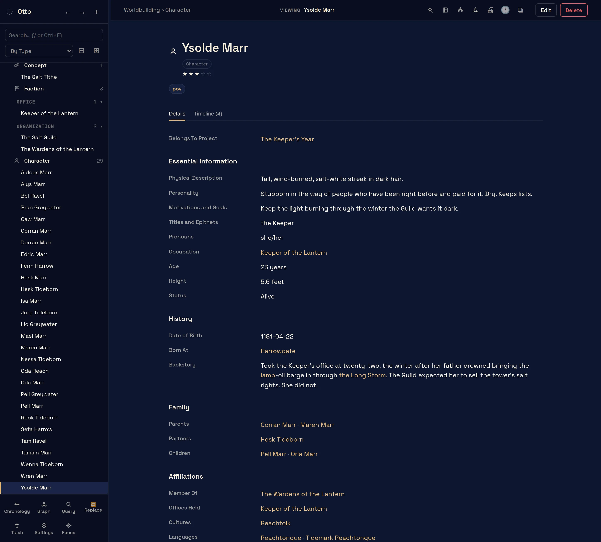
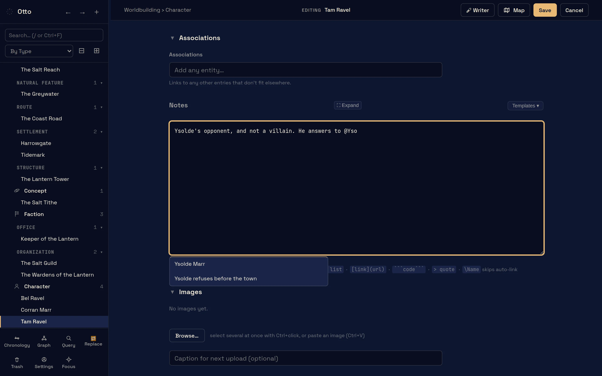
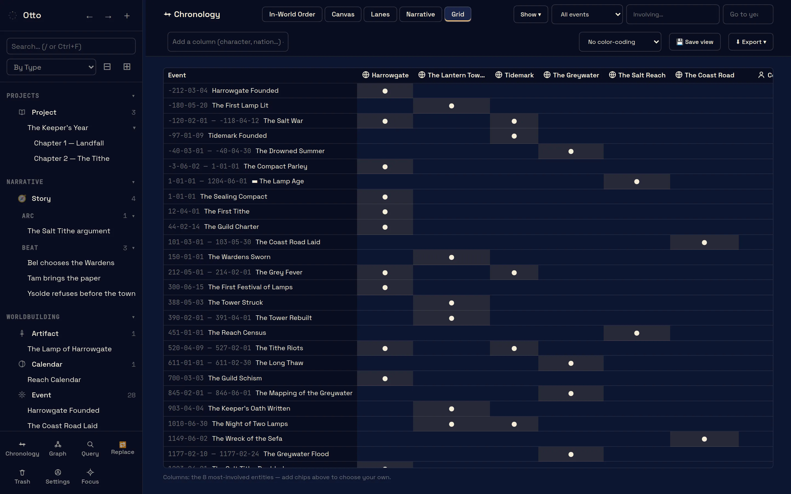
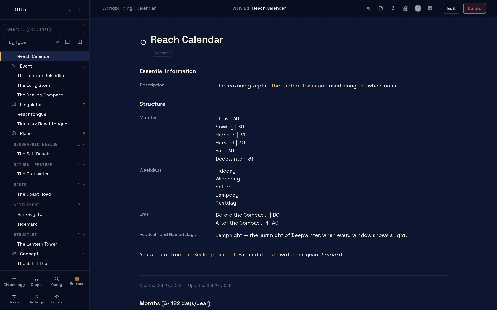
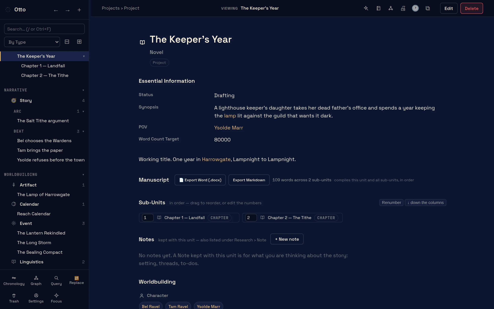
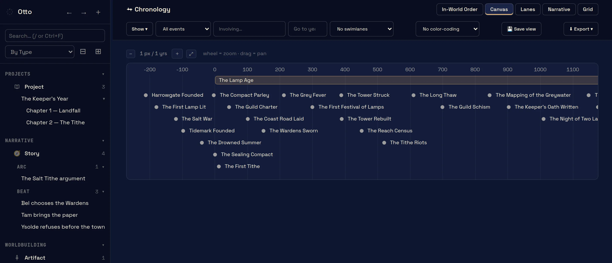
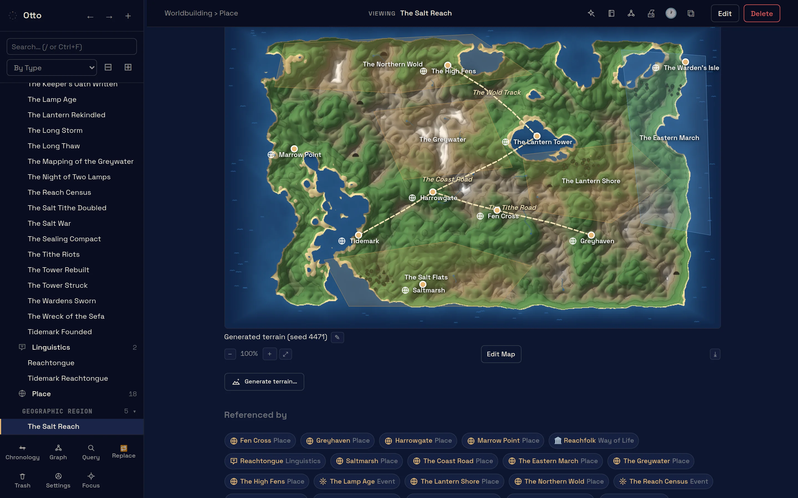
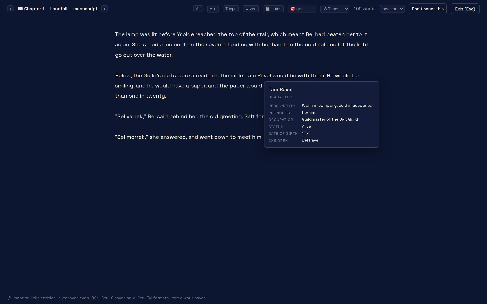
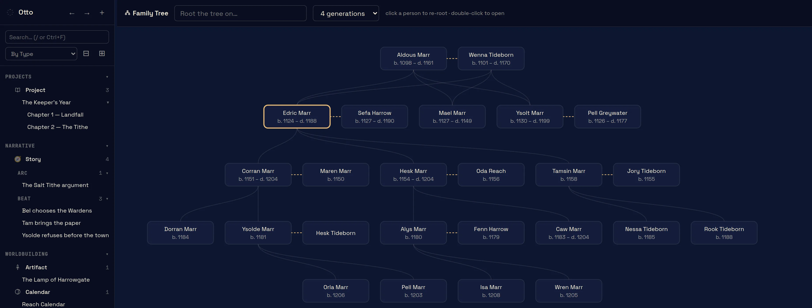
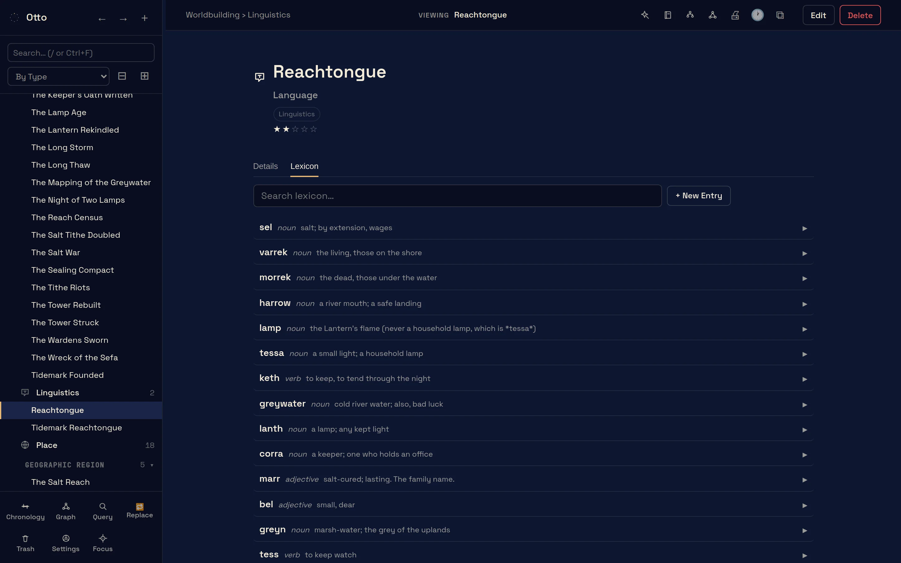
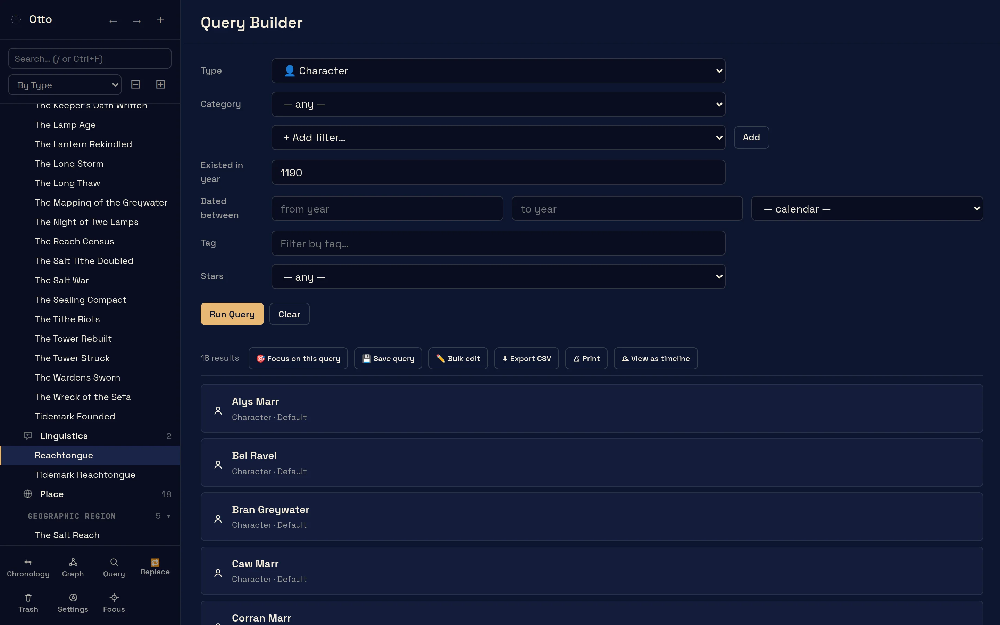
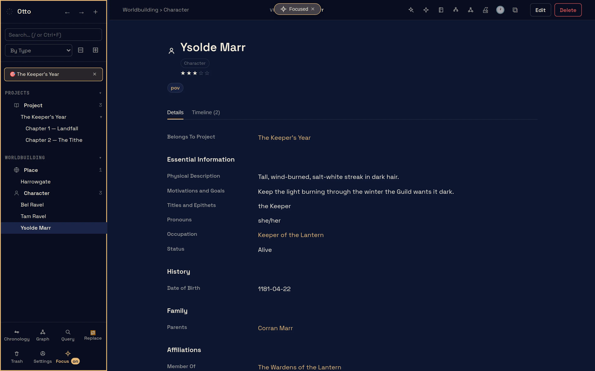
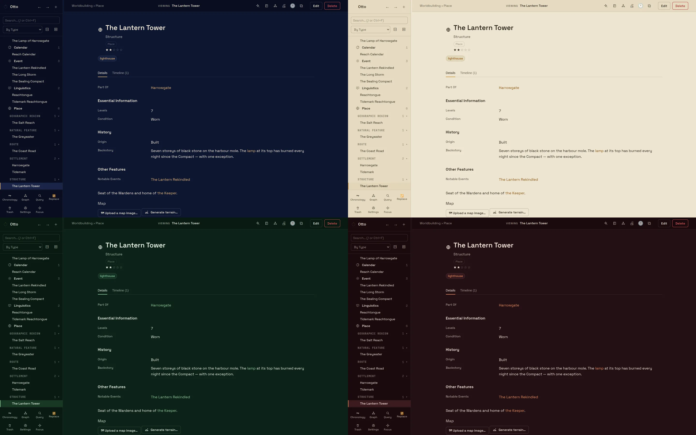
Getting a copy
Otto is free while it's in beta testing. You get the whole program, with the sample world. When we move out of beta testing it will cost a flat price. The beta testers will hear about it first and the version they have will keep working whether they choose to buy it or not.
Read on